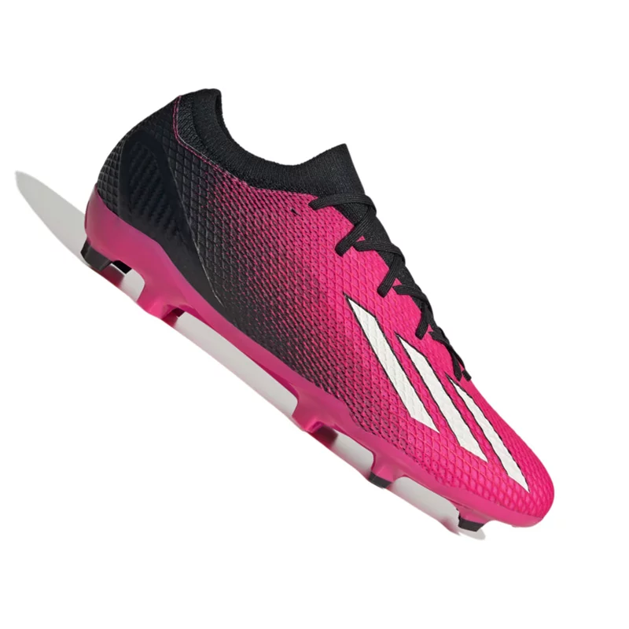

Produtos

Bola de futebol
Bola champions league
Tamanho único
R$ 670.00

Chuteira adidas
Chuteira Adidas rosa
Tamanho 38 e 39
R$ 230.00
Luva de goleiro
Luva de goleiro vermelha
Tamanho G
Bola champions league
Tamanho único
Chuteira Adidas rosa
Tamanho 38 e 39
Luva de goleiro vermelha
Tamanho G
O futebol, esse esporte apaixonante, tem uma história que se estende por séculos e continentes, mas sua forma moderna tem suas raízes na Inglaterra do século XIX. Nesse período, vários jogos e esportes que envolviam uma bola e os pés dos jogadores eram praticados em diferentes partes do mundo, desde a China e Grécia antigas até as civilizações maias e astecas na América Central. No entanto, foi na Inglaterra que o futebol começou a tomar forma e se desenvolver com regras padronizadas. As escolas e universidades britânicas desempenharam um papel fundamental na criação das bases do jogo. No século XIX, várias escolas tinham suas próprias versões de esportes com bola, que variavam em regras e métodos de jogo. Em 1863, um evento crucial ocorreu quando a Football Association (FA) foi fundada na Inglaterra. Essa organização introduziu um conjunto de regras padronizadas para o futebol, conhecidas como as "Regras de Cambridge". Isso marcou o início da codificação do esporte e permitiu que equipes de diferentes escolas e regiões jogassem sob um conjunto comum de regras. O futebol cresceu em popularidade não apenas na Inglaterra, mas também em outros lugares, à medida que as pessoas adotavam o jogo e formavam clubes locais. As primeiras partidas internacionais registradas ocorreram no final do século XIX, com a Inglaterra enfrentando a Escócia. Em 1930, o Uruguai sediou a primeira Copa do Mundo de Futebol, um marco que se tornou o torneio internacional mais prestigiado do esporte. A competição reuniu equipes de todo o mundo, consolidando o futebol como um fenômeno global. Com o tempo, o futebol evoluiu com mudanças nas regras, a tática de jogo se desenvolveu e as competições de clubes se tornaram populares. Ligas de elite, como a English Premier League na Inglaterra e a La Liga na Espanha, atraem os melhores talentos do mundo. O futebol também produziu uma série de ícones, desde Pelé e Diego Maradona até Lionel Messi e Cristiano Ronaldo, cada um contribuindo com seu próprio estilo e habilidade únicos para a história do esporte. Hoje, o futebol é o esporte mais popular do mundo, unindo nações e culturas sob uma única paixão. É um fenômeno global que transcende fronteiras e idiomas, celebrando a emoção, a habilidade e o espírito competitivo que tornam o futebol tão cativante e universal.
Wikipedia